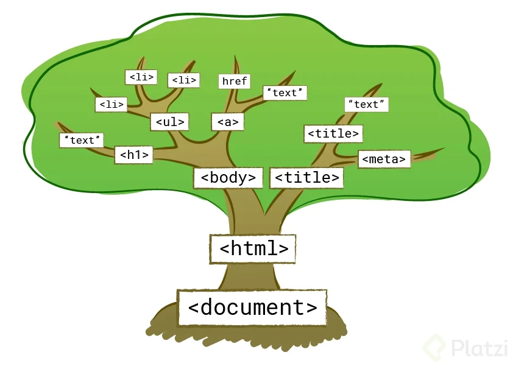

El DOM (Modelo de Objetos del Documento, por sus siglas en inglés Document Object Model) es una interfaz de programación que representa y permite manipular documentos HTML y XML. A través del DOM, se puede acceder, modificar, agregar o eliminar elementos dentro de un documento, proporcionando una estructura jerárquica en forma de árbol.
Características del DOM
Acceso dinámico a los elementos del documento.
Estructura jerárquica basada en nodos.
Permite la manipulación de la estructura, estilo y contenido.
Interacción con JavaScript para actualizar la página.
Objetivos del DOM
Facilitar la manipulación de la estructura de los documentos.
Permitir una interacción dinámica entre el contenido y el usuario.
Optimizar la creación de páginas web interactivas.
Proveer una forma estandarizada de manipular la estructura del documento.
El Objeto Document
El objeto document es la base del lado del cliente en las páginas web. Permite acceder y manipular los elementos del documento HTML, como el cuerpo, imágenes, formularios y la cabecera.
Propiedades Comunes
document.body: Devuelve el elemento <body>.
document.title: Obtiene o cambia el título de la página.
document.images: Lista todas las imágenes de la página.
document.bgcolor: Cambia el color de fondo con nombres como "red" o valores hexadecimales como #FFFFFF.
Métodos del Objeto Document
open(): Abre el documento para edición.
close(): Cierra el documento.
write() / writeln(): Inserta contenido HTML dinámico.
Navegación en el Árbol DOM

El DOM organiza la página en una estructura jerárquica similar a un árbol. Este árbol está compuesto por nodos, y cada nodo puede tener nodos hijos, padres y hermanos. Al manipular la página, es posible navegar por este árbol para acceder o modificar diferentes elementos.
parentNode: Devuelve el nodo padre de un elemento. Si hablamos de un nodo hijo, el nodo padre es aquel que lo contiene. Por ejemplo, si consideramos un elemento <li>, su nodo padre podría ser un <ul>.
childNodes: Proporciona todos los nodos hijos de un elemento, listados en un array. Si hablamos del nodo <body>, sus nodos hijos incluyen elementos como <header>, <nav>, <section>, <aside> y <footer>. Estos nodos son hermanos entre sí, ya que comparten el mismo nivel en el árbol DOM.
firstChild y lastChild: Acceden al primer y al último nodo hijo de un elemento. Si consideras un elemento <ul>, puedes obtener el primer <li> o el último de la lista.
previousSibling y nextSibling: Estos métodos permiten recorrer los nodos hermanos de un elemento. previousSibling devuelve el nodo hermano anterior, mientras que nextSibling devuelve el siguiente.
Acceso a los elementos HTML
Lo accesos son:
getElementById(id): Este método permite encontrar un elemento específico en la página utilizando su atributo id. Por ejemplo, si quieres obtener el elemento con id="demo", puedes utilizar este método.
getElementsByName(): Este método permite obtener todos los elementos que tienen una etiqueta específica.
getElementsByTagName():recupera, en forma de array, todos los elementos que coinciden con la etiqueta que se utiliza como parámetro. Aparecen en el mismo orden que en el código de la página web.
Cambio de Elementos:
Puedes cambiar el contenido o los atributos de un elemento con los siguientes métodos:
innerHTML: Cambia el contenido HTML dentro de un elemento.
setAttribute(atributo, valor): Cambia el valor de un atributo de un elemento. También se puede cambiar el atributo o el estilo de un elemento utilizando: